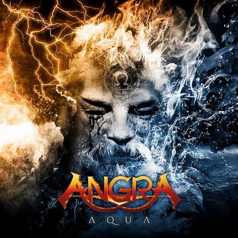

Aqua
Elenco
- Edu Falaschi — lead vocals
- Kiko Loureiro — guitars, backing vocals
- Rafael Bittencourt — guitars, backing vocals
- Felipe Andreoli — bass, additional guitars on #04, backing vocals
- Ricardo Confessori — drums, additional percussion
Sobre o álbum
Aqua é o sétimo álbum de estúdio da Angra e o último com Edu Falaschi nos vocais principais.
Lançado em agosto de 2010, marca o retorno do baterista Ricardo Confessori — ausente desde
a saída da formação clássica em 2000 — e consolida um disco conceitual inspirado em A
Tempestade de William Shakespeare, onde a água funciona como elemento narrativo central:
fúria das marés, tempestades e calmaria redentora numa ilha isolada.
Gravação
Gravado entre fevereiro e maio de 2010 no Norcal Studios (São Paulo, Brasil), com piano
registrado por Antti Rintamäki no Merry Fox Studios (Helsinque, Finlândia). Produção da
banda com Brendan Duffey e Adriano Daga (engenharia e mixagem); masterização por Maor
Appelbaum. Participações incluem cordas (Amon Lima, Yaniel Matos), percussão (Guga Machado),
teclados e orquestrações (Fabrizio Di Sarno, Nei Medeiros, Felipe Grytz), piano (Maria Ilmoniemi)
e coros extensos liderados por Tito Falaschi e Zeca Loureiro. No Brasil a banda optou por
auto-lançamento via Voice Music para manter controle sobre o produto.
Conceito
Rafael Bittencourt estruturou o álbum em torno de A Tempestade: Prospero exilado, Miranda,
Ariel espírito do ar, Caliban monstro e a redenção final. "Viderunt te Aquæ" abre com coral
latino sobre as águas; "Arising Thunder" e "Awake from Darkness" estabelecem conflito e
despertar; "Lease of Life" traz o romance e a promessa de recomeço; "The Rage of the Waters"
personifica a fúria elementar; "Spirit of the Air" e "Hollow" exploram prisão mágica e
vazio existencial; "A Monster in Her Eyes" e "Weakness of a Man" examinam Caliban e a
fragilidade humana; "Ashes" fecha com perdão, citação shakespeariana ("We are such stuff
as dreams are made on") e liberação da ilha — ciclo completo da tempestade à calmaria.
Recepção
Aqua recebeu críticas positivas (Danger Dog 4,75/5; BW&BK 7/10; AllMusic) e alcançou a
11ª posição no ABPD brasileiro, 22ª no Oricon japonês e 147ª na França. Singles "Arising
Thunder" e "Lease of Life" tiveram videoclipes; a edição japonesa inclui remix bônus de
"Lease of Life". O disco encerrou a era Falaschi e preparou Secret Garden (2014), embora
tensionamentos internos tenham sido relatados posteriormente pelos integrantes.
Faixas
- 1. Viderunt te Aquæ 0/10 0:59 Instrumental
- 2. Arising Thunder 2/10 4:52
- 3. Awake from Darkness 2/10 5:54
- 4. Lease of Life 3/10 4:33
- 5. The Rage of the Waters 2/10 5:33
- 6. Spirit of the Air 1/10 5:22
- 7. Hollow 1/10 5:30
- 8. A Monster in Her Eyes 1/10 5:15
- 9. Weakness of a Man 1/10 6:12
- 10. Ashes 1/10 5:05
Referências
- Aqua (album) — Wikipedia (article)
- Aqua — MusicBrainz (database)
- Angra — Aqua — Metal Archives (database)